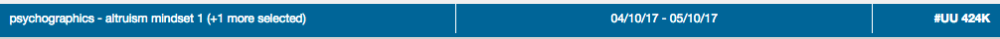
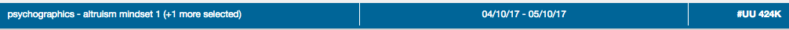
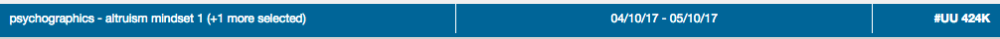

Testing Strategy
Vlad Mystetskyi, Nik Savchenko,
eXelate, A Nielsen Company
Test types
- Unit tests
- Component tests
- Integration tests
- E2E tests
- Sanity tests
Conventions, concepts, patterns
- File Co-location
- Plan/Design tests
- Reuse tests
- Test Data
- Page Object
File Co-location
- For code
(view, actions, reducers, controllers, models, collections, etc.)
- For test
(specs, po, test, data, fixtures, etc.)
Some links:
React dir structure,
Code organization
Co-location Unit tests
Reuse Tests
checkHeaders: (checkData) ->
describe "Check header-bar rendering:", ->
it 'should have correct selected seeds header', () ->
expect(po.getEl('seeds'))
.toHaveText(checkData.seeds)

Reuse and Test Data
describe "When open/close Seed Selector:", ->
test.checkOpening()
describe "When open/close (i.e. cancel) Seed Selector:", ->
test.checkOpening('back')
Reuse and Test Data
describe "When selecting seed UNDER UU limit:", ->
test.checkLimitUu('simple')
describe "When selecting seed OVER UU limit:", ->
test.checkLimitUu('altruism')
Tests for ... types
- New Component
- New module/page/app
- Small additional functionality at component
- Additional functionality at current module
- Old component
- Old modules/pages/apps
_onRenderStateChanged: ->
@toggleSort(@state.get('isSort'), @state.get('isDesc'))
...
describe 'When call _onRenderStateChanged callback:', ->
it 'should call toggleSort with isSort and isDesc params form renderState', ->
spyOn(sortView, 'toggleSort')
sortView._onRenderStateChanged()
expect(sortView.toggleSort).toHaveBeenCalled()
...
Refactoring: step #1

we still have @model - it mean for test different variants of values - widths we need to create a lot of instances of out class with different params.
Refactoring: step #2

Now we can test static stackBarWidth function logic for different cases without creating instances of our class.
Unit tests is not only functions
What are we testing?
- Initialization (check state, type and value of main properties, sub-objects, classes, etc.)
- Rendering (check $el, template, classes, texts, values at html)
- Sub-view (tooltips, child views, etc)
- Actions (click, change state, change input, etc.)
Examples
Options and TestData IconTooltip Component

Integrations tests
- Patterns: PageObject, TestData, Reusable tests, etc.
- Split page to parts for Integration Tests (modules)
- Scenario for tests and Independent tests
- Mocks and Fixtures (Kakapo, Nock, JSON-fixtures)
- Actions and Check methods
- Asynchronous actions and tests
Examples:
Index Report,
Seed Selector
Scenario Example
- Seed selector works in several modes; Init, In-Process, Ready
- Different scenarios for different modes
- Base Tests:
- Seed Selector Initialization
- Rendering (for each mode)
- Seed selection for order first/init Report
- Cancel report from in-process mode
- Re-order report (i.e. order new report with other paramters)
Scenario Example: Details
- Open/Close seed selection
- Select Seeds
- Change Data range
- Check header changes depend of Selectors changes
- Check UU indicator (under limit notification)
- Other error use cases (segments collection or timeline data not loaded)
- Segments Bucket behaviour
- Buttons behaviour (disable status, changes according mode or UU value, etc.)
Module we want to test in code
@addChild('selectSeeds', SeedsSelector, $container, {
mode: 'primary'
seedType: 'segments'
permissions: @permissions
indexCategoriesCollection: @indexCategoriesCollection
seedGroupCollection: @segmentCategoryCollection
segmentByDisplayCollection: @segmentByDisplayCollection
state: @state
})
Same module at Page Object of Test
@viewController = new SeedsSelector($fixture, {
mode: 'primary'
seedType: 'segments'
permissions: @mockedPermissions #JSON-fixture
indexCategoriesCollection: @mockedCollection #kakapo
seedGroupCollection: @segmentCategoryCollection
segmentByDisplayCollection: @segmentByDisplayCollection
state: @mockedState #emulation
})
Actions and Tests (Checks)
checkOpening: () ->
return [
test.doOpen()
it "should have audiences category", () ->
expect(po.getCategories()).toEqual(mode.categories)
test.doClose()
]
Action example
doOpen: =>
it '-OPEN seed-selector by clicking on header-bar', (done) ->
po.doOpen()
wait(po.getSeedGroupSelectBoxEl)
.then(-> wait(po.getCategorySelectBoxEl))
.catch(fail)
.then(done)
Asynchronous: doChangeDateRangeRadio
it "-CHANGE data range radio for `#{scenario.id}`", (done) ->
po.doOpen()
wait(po.doSelectSeedGroup, scenario)
.then(po.doOpenSeedsFilter)
.then(-> wait(po.fetchSegmentCollection))
.then(-> po.doClickOnSegment(scenario.segmentId))
.then(-> wait(po.fetchSegmentByDisplayCollection))
.then(-> wait(po.enabledDateRangeFilterDropDownContainer))
.then(-> po.doOpenDateRangeFilter())
.then(-> po.doChangeDateRangeRadio(scenario.radio))
#.then(sleep) # TODO: check and change (date range change debounce)
#.then(-> wait(po.fetchUuModel))
.then(-> wait(po.enabledButton))
.catch(fail).then(done)
Tests for new functionality at current modules
- You'll use the same or similar approaches
- Split added/changed code to separate functions/modules
- Unit, Component, Integration tests
- You SHOULDN'T test old code if you don't change it
- But, You CAN test some old code/functionality
Some results of Pilots
- Better quality: we got less bugs from backend
- More readable code (refactoring during tests)
- Find some rare cases (async errors)
- Find and fixed back-end/network error cases
- We start to fill that we can make changes...
 
